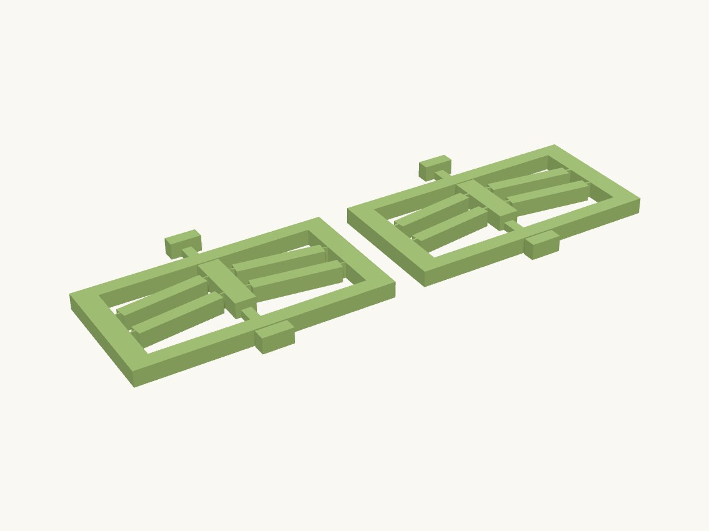

Work / R&D

Print reports
- WorkedPLA2026-09-11
Printed the redesigned coupon in PLA because no PETG was on hand, and it works really well. The user did not say which hinge width was printed; both parts are listed. Confirms the estimated 37 mm span and 8 deg pre-tilt snap in PLA. Long-term creep when parked in one state is still unobserved.
- Failed2026-09-10
Printed the bistable_coupon and it failed. The left and right hand brackets must be connected, and the switch arms have to pass through a hole that tunnels through the frame. Cause: cut the plunger slots clean through both rails, so the frame was two separate side brackets joined only by the living hinges. Material not stated; a frame design failure, not evidence about the mechanism or its hinges.
Technical details
Parts: coupon_h05 (0.5 mm living-hinge necks, one 0.4 mm line: the reference geometry) and coupon_h08 (0.8 mm necks, two lines: the fallback). Everything else is identical: a rectangular frame whose side members are the component's anchors, a bar that runs under a tunnel through each rail so the shuttle can be pressed from either side, and finger pads on both ends of the bar.
The frame is one closed loop. The first print (2026-09-10) failed because the plunger slots cut each rail clean through, leaving two separate side brackets held together only by the living hinges. Now the bar is 3 mm tall on the bed and each rail keeps a 2.75 mm bridge over it: the tunnel is open to the bed (so the bar prints in place without support) and closed on top, 5.2 mm of bridging per rail. The pads and the shuttle stay full height.
Print flat as built (bed at z=0, 6.35 mm tall), beams and necks in the bed plane. Enable thin-wall / Arachne perimeters for the 0.5 mm part. Print one of each in PETG first; the reference authors recommend polypropylene and PLA is expected to creep. The test: press a pad, does it snap and stay; press the other, does it come back; after 50 cycles, are the necks whitening. Record the result on the review page as a print report so lib/validation.json gains the evidence and the component's material_notes can be set.
Assumptions: span 37 mm and pre-tilt 8 deg are estimated from the reference renders (the coupon tests them); plunger and pads are sized for a finger, not for any hardware. Idea: ideas/bistable_compliant_switch.
Parts
| Part | Size (mm) | Volume | Thinnest wall | Printability |
|---|---|---|---|---|
| coupon_h05 | 97.28 × 73.147 × 6.35 | 18.1 cm³ | 0.5 mm | passes |
| coupon_h08 | 97.28 × 73.147 × 6.35 | 18.1 cm³ | 0.8 mm | passes |
Engineering views
Downloads
- bistable_coupon.3mfwhole plate · 9 KB
- coupon_h05.stepSTEP · 319 KB
- coupon_h05.stlSTL · 17 KB
- coupon_h08.stepSTEP · 319 KB
- coupon_h08.stlSTL · 17 KB
Library parts used
Parametric components shared with the other designs; see the parts library.
| Component | What it does | Printed in |
|---|---|---|
Bistable beam pairmechanisms.bistable_beam_pair | Fully compliant bistable slider: a central shuttle held between two fixed anchors by N pre-tilted beams per side with living-hinge necks; snaps between +Y and -Y rest positions. | not yet |
Source: models/bistable_coupon · built 2026-09-10 23:59
Snap-through switch test
A test piece for a two-position flexure switch that snaps between states with no spring and no hinge pin.
Mechanisms that bend are tested before they go into a product. The first version failed and taught us the frame must be one closed piece; the redesign snaps reliably in PLA.
- Size
- 97 × 73 × 6 mm
- Print plate
- 205 × 73 × 6 mm
- Parts
- 2
- Filament (PLA)
- about 39 g
- Print time
- about 2.7 h
- Status
- Printed in PLA
Want it in another size, colour or material? Say so in the request: fitting it to your object is a $5 adjustment, and you see the revised design before it's printed.
Measure it, describe it, and we'll draw it.
Requests take a few minutes. You'll get the design and a price back before anything is printed.